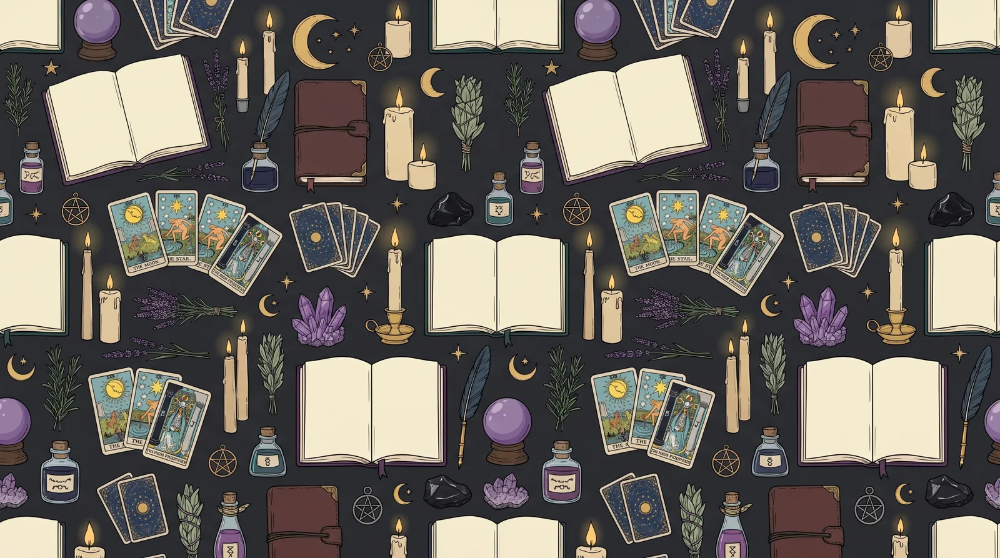

Begin Here
Journal Prompts
Mediumship
- What do you think mediumship is? Where do those ideas come from? How have they been influenced by the religious tradition you grew up in or the media?
- Have you ever had an encounter with an ancestor, ghost, or another discarnate spirit? What was the experience like?
- What makes you feel the most connected with your body? What special insights have you had while engaging in that activity?
- How do you make major decisions in your life? Do you feel like you make decisions primarily through logic, intuition, or both? How confident are you in your decisions?
Divination & Dreams
- If you know people who work with spirits or identify as mediums, how have their stories influenced your beliefs or practices? Are there any attitudes you adopted from them that you might want to let go of now that you have a rooted ancestor veneration practice?
- Have you ever received a message from your ancestors or spirit guides that changed your life?
- Are there any messages that you have received from your ancestors or spirit guides that you feel like you haven't fully integrated into your life? Why do you feel that way? What's one small step that you could take today to integrate that medicine?
- How do you practice spiritual discernment? How do you work through messages you receive from your unconscious?
- Do you practice any forms of divination? Do you ever feel as though divination is a channel for talking to your ancestors or spirit guides? If you haven't felt this in the past, is it something you would like to explore?
- Do you pay attention to your dreams? If not, is this something you would like to explore?
Spiritual Hygiene & the Home
- Which house spirits do you feel the most strongly in your home? What is your relationship with them like? How do you think you could improve that relationship?
- How do you feel about housework? What is your favorite chore? Your least favorite chore? How did your family of origin impact your attitude toward housework?
- What is your baseline emotional state like? How do you know when you have deviated from that baseline, for example, how do you realize when you are stressed or sad?
- What sort of spiritual hygiene practices do you do regularly today? Which spiritual practice described in this chapter do you think you would benefit the most from right now?
Shadow Work
- How would you describe yourself?
- How would other people describe you? How do you feel about that?
- What are your best and worst character traits?
- What do you like and dislike about yourself?
- What part of you doesn't feel heard?
- What would you like to say?
- What makes you happy?
- Who do you trust the most? Why?
- Do you have issues with trust?
- What things trigger you the most? Why are those things triggering for you?
- What things are you judgmental about?
- How do you pass judgement on yourself?
- When is the last time you felt let down? Why?
- Who has the most influence over you in your life? Is it a healthy influence?
- How often do you lie to yourself and others?
- Is there any part of you in denial?
- What is your biggest fear? Why?
- What irrational fears do you have? Why?
- What grudges do you hold? Why? Are they rational?
- Do you hold on to any resentment? Towards whom? Why?
- What am I afraid of? What shadow allies can I call on?
- When did I ignore my intuition that something was "wrong," and what happened?
- What disturbing dreams have I had, and what do I think they mean?
- What ill omens have I seen recently? How do they make me feel?
- If I could go back in time, what is one thing that I would do differently?
- When have I used toxic positivity to ignore my shadow?
- When did I let go of something that was no longer serving me but then ended up getting no closure?
- How else can I use Witchcraft to connect with my shadow self?
Ancestors & Ancestral Practice
Tending the Cauldron of Ancestral Wisdom
Use books and research to explore outward, but also descend inward into the quiet knowing of your soul. Your inner cauldron is stirred by ancestors who speak through dreams, visions, and memory.
- What lands did your ancestors live on? What did they call these lands? What are these lands called now?
- What languages did your ancestors speak?
- What landforms, bodies of water, trees, plants, stones, or other geographical features were important to your ancestors?
- How did your ancestors acknowledge or celebrate the rhythms of nature, the changing of the seasons, the tides, or the moon phases?
- What magickal traditions did your ancestors uphold? What folklore inspired these practices?
- What deities did your ancestors believe in? How did they worship them?
- What foods did your ancestors eat?
- What rites of passage did your ancestors practice (birth, coming of age, marriage, death, etc.)?
- What did your ancestors believe happened to the soul after death?
- What is the origin and history of your surname?
- What history, anthropology, or sociology did you encounter in your education? What did those lessons convey about human nature, and how has that understanding shifted over time?
- Write down all the names of blood and lineage ancestors you know. If adopted, include adoptive parents and their ancestors. If the list is short, identify a living relative who may hold more information, or begin genealogical research.
- What naming patterns exist in your family? Are any relatives named after official or folk saints, or after other family members?
- Beyond blood and lineage ancestry, what other groups or communities do you identify with? Are there historical figures within those groups you particularly admire?
- Have you ever sensed the presence of a guardian or spirit guide? Has there been a moment when a spirit seemed to step forward to protect, guide, or inspire you?
Generational Trauma
- What trauma are you aware of your ancestors experiencing during their lifetimes, either personally or as a group? When and how did you learn about these traumas? How did learning about them shift your understanding of your living family?
- What destructive patterns in your living family might be related to these traumas? What survival skills does your living family have that may be related to these traumas?
- How do you feel about forgiveness? Is there anything you could benefit from forgiving today?
- How do you feel about death? Have you ever come close to dying before? If so, how did it change your perspective on life?
- Do you feel prepared to die? What small step could you take today that might help you prepare for that moment?
- What would happen if we defined ourselves by our ecstasies rather than by our traumas?
The Altar
- Did any members of your family dedicate a special area to images of the divine or pictures of their ancestors? Did you ever think of this area as an altar?
- Have you encountered altars outside of churches and museums? When did you encounter them? How did they make you feel? How did you interact with them? If you have experienced many altars, which one stands out most in your memory? Why do you think that one seemed so special?
- Do you already have an ancestor altar?
- If so: How do you feel when you stand or sit in front of it? Do you interact with it regularly? Are you satisfied with it, or does it feel like it could evolve? Is there anything on your altar that doesn't inspire you when you see it?
- If not: Do you want to build one? Would you prefer one that is temporary or permanent? Simple or elaborate?
- How do you feel about the relationship between material items and spiritual realities? What attitudes toward items and shopping have you absorbed from consumer culture? If you have trained in or read deeply about a spiritual tradition, what attitudes toward the material world have you adopted from that tradition?
- What is the most beautiful image of death or the dead that you have ever seen?
- Do you currently have a magickal practice? Are there any workings you would like to try doing at your ancestor altar?
Offerings
- The five love languages are: spending quality time together, words of affirmation, acts of service, physical touch, and exchanging gifts. Which do you prefer to use to show love to others? Which do you prefer others use to show love to you? (This prompt is especially fruitful when explored with family members and romantic partners.)
- What is the best gift you have ever received? What made it so meaningful?
- How do you feel about cooking? If confidence in the kitchen is lacking, what is one small step that might help build it?
- Looking back at your list of blood and lineage ancestors:
- Do you know what any of these ancestors' favorite foods were?
- Did any of them live through famine or the Great Depression? Do you see patterns in your living family's relationship with food that might trace back to those experiences?
- What do you know about your ancestral foodways? What stories have you heard about your ancestral foods? Are there any foods from your ancestral tradition that you feel a particular affinity for?
- What do you know about the local, seasonal foods from the land you currently live on? What stories have you heard about them? Do you feel a particular affinity for any?
- What fermented beverages were loved by your ancestors? How do you feel about drinking alcohol? Does it feel more like medicine or poison to you?
Plant Work
- How do plants fit into your spiritual cosmology? How do they relate to your understanding of the ancestors and the spirit world or underworld? If you've never thought about this before, now is an excellent time to start.
- Do you work with plants in any of the following ways: growing them, cooking with them, making teas out of them, adding them to baths, making tinctures out of them, making charms out of them? If so, how do you feel you could incorporate your ancestor veneration practice into this work?
Ancestral Magick & Spellwork
- What beliefs do you hold about magick? Where did those come from: your family, your culture of origin, books, your spiritual tradition? Which of those beliefs do you feel ready to let go of or revise now that you have a rooted ancestor veneration practice?
- Have you practiced magick in the past? If so:
- Were there any spells you did that were particularly effective? Why do you think they were so effective?
- Were there any spells you did that did not work at all? Why do you think they did not work?
- Were there any spells you did that surprised you in the results they produced? How did you feel about those results?
- Do you practice magick now? If you practiced magick in the past but stopped, why did you stop? If you have never practiced magick but always wanted to, what is blocking you?
Prayer
- Was anyone in your family fond of prayer? Did you know of any members of your family who prayed for you when you were growing up? When you look back now, do you think there were any members of your family who were praying for you but not telling you about it?
- Who taught you how to pray? What did they tell you about prayer?
- Do you pray regularly? Why or why not?
- Are there any prayers or scriptures from your spiritual or religious tradition that you know well? If not, this is an area worth exploring.
- How do you feel about the idea of singing? How do you feel when you actually sing?